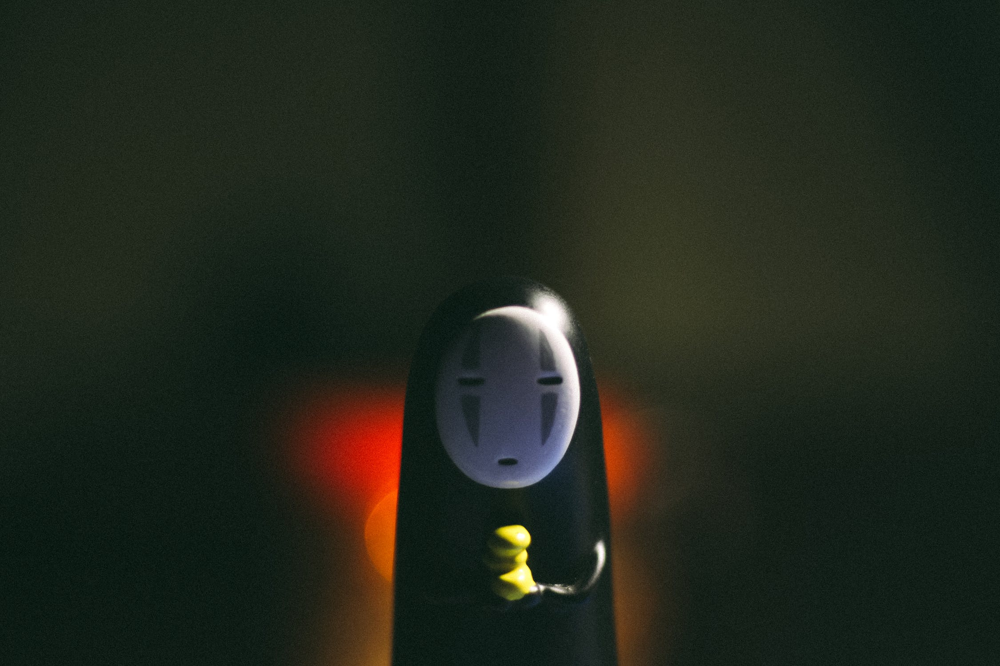
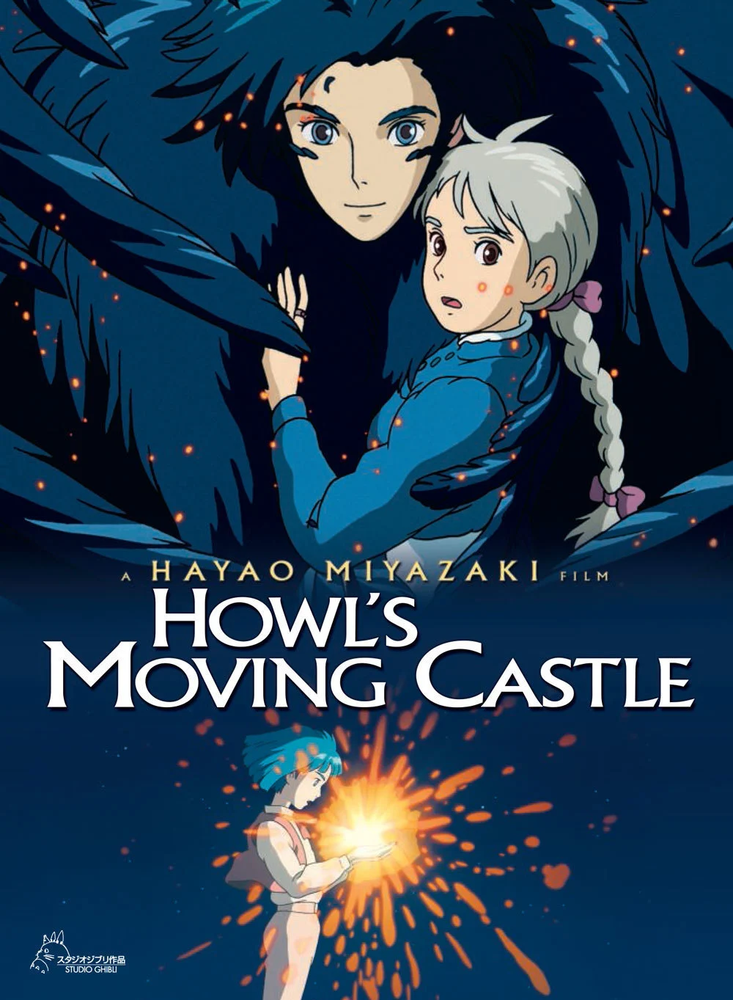

Spirited Away can be described in three words: Magical journey, captivating animation, unforgettable characters - these words perfectly capture the essence of the amazing movie Spirited Away. It takes you on a whimsical adventure, with stunning visuals and a cast of characters that will stay with you long after the credits roll. It's truly a masterpiece that deserves all the praise it receives.
Howl's Moving Castle: A captivating animated film featuring a young girl transformed into an old woman, embarking on a magical adventure with the mysterious wizard Howl and his moving castle. It is a magnificent must-watch for Miyazaki fans and lovers of enchanting storytelling.
